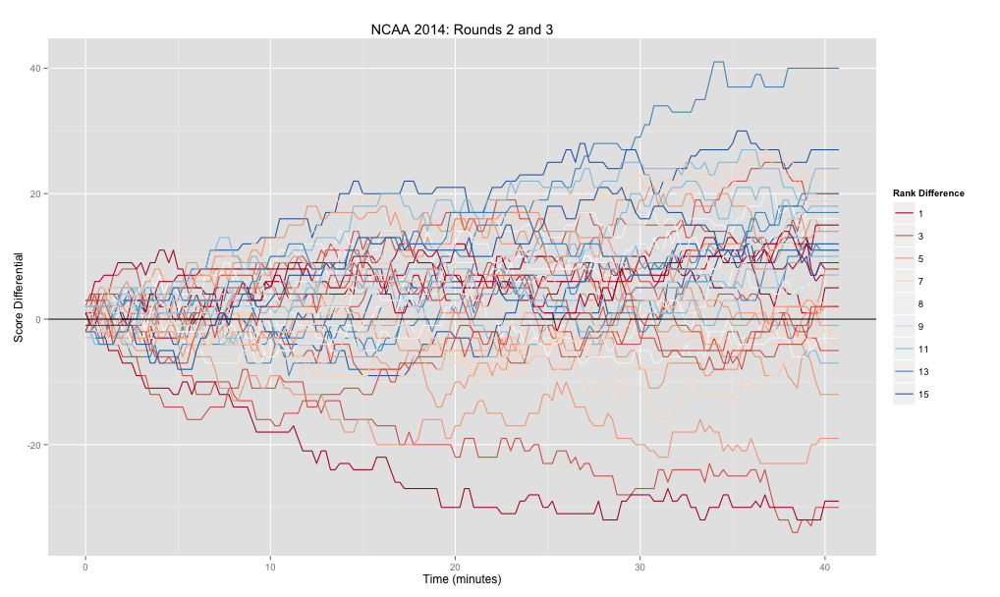

Visualizing March Madness
Sun 04 May 2014 by Nick Jones(Note that this was originally posted in April on the Wiki page of my Github)
It's easy to miss games in the NCAA tournament (or any competition for that matter) -- wouldn't it be nice to know what the game "was like?" Was it close or a blowout? Maybe the favorite won by ten points, but was it a tight game before that? The goal here is to
- Visualize the trajectory of a game
- Compare the trajectories of one game to another
- Cluster games?
Scraping Play by Play Data
In order to see plot a game, we need to create a time series of the game -- for any given time in the game, what was the score? ESPN provides play-by-play data for every game (for example, http://scores.espn.go.com/ncb/playbyplay?gameId=400546936) which we can use to parse out the score at any given time. Using Python's requests and BeautifulSoup libraries make this a whole lot easier. Check out this gist to see the full scraper's code (or view it in my repo).
The scraper outputs a .csv file containing events from all the NCAA tournament games played so far. Each event stores the teams involved, metadata about the teams (their rank), the round number, the time, and scores. Note that we'll be interested in looking at the difference in scores at a given time; since we expect a higher ranked team to be winning, the diff_score variable used throughout is with respect to the higher ranked team, i.e. score of higher ranked team - score of lower ranked team. An example (with header included) of a few events from the Dayton vs. Ohio State game is shown below:
away,away_rank,away_score,diff_score,game_id,home,home_rank,home_score,rank_diff,round_num,time
DAY,11,0,2,DAY-OSU,OSU,6,2,5,2,0.0
DAY,11,0,2,DAY-OSU,OSU,6,2,5,2,0.25
DAY,11,0,2,DAY-OSU,OSU,6,2,5,2,0.5
DAY,11,0,5,DAY-OSU,OSU,6,5,5,2,0.75
...
Analyzing the Data
There are a ton of questions you could ask about these data -- do some games follow a similar trajectory? Which games are these? What games seemed most exciting? Before quantifying these questions, it'd be nice to have a way to visualize the games compared to one another. Note that the scraper's output gives uniform time intervals. In other words, we define each event to happen every 15 seconds to allow us to compare games more easily.
As a side note, I really, really wanted to find a Javascript library that made nice interactive plots of these data without much overhead. I know only a little basic JS, and tried messing with a couple of D3 extensions (namely NVD3 and Rickshaw), but found them difficult to customize. With more time (and patience!), I'd love to port these kinds of visualizations over to a more interactive platform.
As a dedicated user of R and ggplot2, it made more sense to jump into RStudio and start playing with the data.
Time Line
My original thought was simply to plot each game as a line and overlay all the games at once, i.e. put time on the x-axis and score differential on the y-axis (here's where the interactivity of Javascript would be perfect -- simply highlight a specific game and see more details about it, or zoom in on certain time periods).

The colors shown on the plot map to the difference in rank between the two teams. Ideally, we could map the color (or some other aesthetic) to an individual game, making it easy to see which line on the plot corresponds to which game. However, once we start looking at more than roughly 6 games, it's difficult to see the difference between colors. So we'd like to incorporate:
- Individual games -- what teams are involved? The above plot doesn't show this well.
- "Fairness" of game -- how different are teams' ranks?
- Trajectory of game -- was it close, a blowout, or had sections of each?
Heatmap
Which brings us to the heatmap, which is a great way to visualize many variables at once. The below heatmap (larger version) does a much better job of capturing all the above aspects, though it requires a little more explanation.
{kind=link}
- X-axis is still time
- Each row corresponds to a game (with teams shown on the far left)
- The color of each cell is based on the score differential of the given game at the given time -- blue means the favorite is winning by a lot, red means the underdog is winning by a lot, and closer to white means the game is close. (Note that any lead of over 15 is rounded down, since we'd like the colors to be distinguishable at lower differentials).
- The rows are ordered! As shown on the right side of the map, rows are grouped by the rank differential of the game -- games between teams with a rank differential of 3 are plotted together etc. Thus, in the bottom rows we would expect to see lots of blue (since the higher ranked team is much higher ranked). Any place we see red means an upset -- the lower the red is on the map, the more of an upset it was.
For example, the Duke vs. Mercer game was an upset, since Duke was 11 seeds higher than Mercer. By looking at the MER-DUKE row, we can see that it was a good game -- each team had the lead for some time, but it switched often (as shown by the shift back and forth from red and blue). Similarly, Virginia had a tough time with Coastal Carolina for a while, as shown by the red cells in the first 2/3 of the CCAR-UVA game. On the other hand, Pitt-Colorado game wasn't particularly interesting -- Pitt was winning big the whole game, as shown by the constant red in their row.
The code for making the above plots isn't too tough -- here's the heatmap:
head(df)
away away_rank away_score diff_score game_id home home_rank home_score rank_diff round_num time
1 DAY 11 0 2 DAY-OSU OSU 6 2 5 2 0.00
2 DAY 11 0 2 DAY-OSU OSU 6 2 5 2 0.25
3 DAY 11 0 2 DAY-OSU OSU 6 2 5 2 0.50
4 DAY 11 0 5 DAY-OSU OSU 6 5 5 2 0.75
5 DAY 11 0 5 DAY-OSU OSU 6 5 5 2 1.00
6 DAY 11 3 2 DAY-OSU OSU 6 5 5 2 1.25
# Column for rounded scores -- anything over <max_score> will be the same color
df$rounded_diff_score <- sapply(df$diff_score, function(score) {
ifelse(score > 0, min(score, max_score), max(score, -max_score))
})
# Thanks to tutorial here: http://learnr.wordpress.com/2010/01/26/ggplot2-quick-heatmap-plotting/
# Also good: http://quantcorner.wordpress.com/2013/11/02/creating-a-heatmap-to-visualize-returns-with-r-ggplot2/
heat <- ggplot(df, aes(time, game_id)) +
geom_tile(aes(fill = rounded_diff_score), color = 'white') +
scale_fill_gradient2("Score Differential", low = 'red', high = 'blue') +
facet_grid(rank_diff ~ ., scales = 'free', space = 'free', labeller=rank_diff_label) +
theme_bw() +
# Horizontal text on the facet
theme(strip.text.y = element_text(size = 9, angle = 0)) +
scale_x_continuous('Time') +
scale_y_discrete('Teams') +
ggtitle('NCAA 2014: Rounds 2 and 3')
print(heat)
All the plotting code is available here if you're curious! Feel free to follow me on Twitter @nrjones8 for more posts in the future.